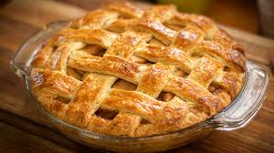

Apple Pie
Apple pie is a timeless dessert that has become synonymous with comfort and home-cooked goodness. Its origins can be traced back to Europe, particularly England, where apple pies have been made for centuries, but it is in the United States that the dish truly became iconic. In fact, "as American as apple pie" is a well-known phrase symbolizing the country's values of tradition and family. At its core, apple pie consists of a flaky, buttery crust that encases a filling of sweet and tart apples, typically flavored with cinnamon, nutmeg, and a hint of sugar. The apples soften during baking, creating a warm, fragrant filling that's both tender and juicy. The pie is often enjoyed with a scoop of vanilla ice cream or a dollop of whipped cream, adding a creamy contrast to the crisp crust and the tangy apple filling.

Ingredients:
Ingredients for the Pie crust:
- 2 1/2 cups all-purpose flour
- 1 cup unsalted butter (chilled and cut into cubes)
- 1/4 cup ice water (more if needed)
- 1 teaspoon salt
- 1 tablespoon granulated sugar
Ingredients for the Apple filling:
- 6-7 medium apples (Granny Smith or Honeycrisp work well), peeled, cored, and sliced
- 1/2 cup granulated sugar
- 1/4 cup brown sugar
- 1 tablespoon lemon juice
- 1 1/2 teaspoons ground cinnamon
- 1/4 teaspoon ground nutmeg
- 2 tablespoons all-purpose flour
- 1 tablespoon unsalted butter (cut into small pieces)
Instructions:
For Crust:
-
Mix Dry Ingredients: In a large bowl, mix together the flour, salt, and sugar.
-
Cut in Butter: Add the chilled butter cubes to the flour mixture. Use a pastry cutter or your fingers to work the butter into the flour until the mixture resembles coarse crumbs.
-
Add Ice Water: Slowly drizzle in the ice water, stirring with a fork until the dough begins to come together. If necessary, add more water a tablespoon at a time.
-
Form Dough: Divide the dough into two equal parts, shape them into discs, wrap in plastic wrap, and refrigerate for at least 1 hour.
For Apple Filling:
-
Prepare Apples: In a large bowl, combine the sliced apples, granulated sugar, brown sugar, lemon juice, cinnamon, nutmeg, and flour. Toss everything together until the apples are well-coated.
Assembeling the Pie:
-
Preheat Oven: Preheat your oven to 220°C (425°F).
-
Roll Out Dough: Roll out one of the dough discs on a floured surface to fit a 9-inch pie dish. Transfer the dough to the pie dish and press it gently into place.
-
Add Apple Filling: Pour the apple mixture into the crust and dot the filling with small pieces of butter.
-
Top Crust: Roll out the second disc of dough and place it over the apples. Trim the excess dough and crimp the edges to seal. Cut a few slits in the top crust to allow steam to escape.
-
Bake: Bake the pie at 220°C (425°F) for 15 minutes. Then, reduce the temperature to 175°C (350°F) and bake for an additional 40-45 minutes until the crust is golden brown and the filling is bubbly.
-
Cool: Allow the pie to cool for at least 2 hours before slicing and serving.
Enjoy your homemade apple pie!